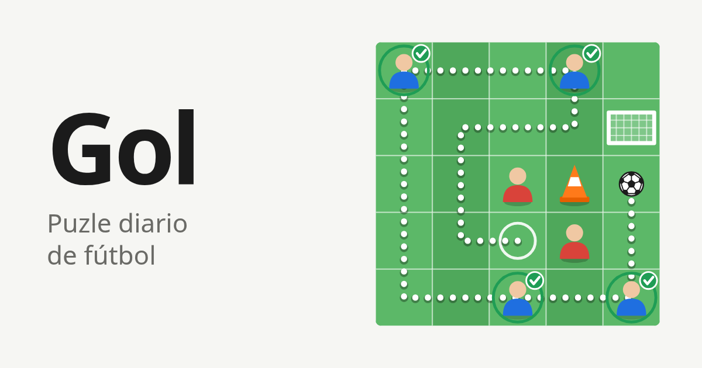

Cómo se juega
Gol es un puzle diario de fútbol. Tenés una cancha de 5 por 5 casillas, una pelota, cuatro compañeros y un arco. El objetivo es llevar la pelota al arco pasando por todos tus compañeros, sin pisar dos veces la misma casilla.

Las piezas
- La pelota arranca en la casilla de salida, marcada con un círculo blanco.
- Los compañeros son las figuras con tu camiseta. Para pasarles la pelota alcanza con pisar su casilla.
- Los conos y los rivales ocupan casillas por las que no se puede pasar. Los dos funcionan igual: son obstáculos.
- El arco es donde termina la jugada.
Cómo se mueve la pelota
La pelota avanza de a una casilla, hacia arriba, abajo, izquierda o derecha. No se mueve en diagonal ni salta casillas.
- Con el dedo o el mouse: arrastrá la pelota por la cancha, o tocá una casilla vecina para avanzar un paso.
- Con el teclado: usá las flechas con la cancha enfocada.
- Para retroceder: volvé a la casilla anterior y se deshace el último paso. También podés tocar cualquier tramo anterior del recorrido para cortarlo hasta ahí.
- Para empezar de nuevo: el botón "Borrar" reinicia el recorrido y suma un intento.
El arco
El arco mira hacia arriba, así que solo se entra de frente: desde la casilla que tiene justo encima, pateando hacia abajo. Desde los costados o desde atrás la pelota no entra y el juego te avisa.
Se patea llevando la pelota al arco desde esa casilla: arrastrándola hasta ahí, tocando el arco o con la flecha hacia abajo.
Si la jugada es perfecta, el gol vale directo. Si te falta algún compañero o hiciste algún cruce, el juego te pregunta antes: "Seguir" te deja corregir el recorrido y "Rematar" lo da por terminado.
Rematar es definitivo. Hay un solo resultado por día.
El puntaje
Empezás con 100 puntos y se descuenta así:
- 25 puntos por cada compañero que no recibió la pelota.
- 10 puntos por cada cruce, es decir, por cada vez que la pelota vuelve a pasar por una casilla que ya había pisado.
El puntaje nunca baja de cero. Una jugada perfecta es la que llega al arco con 100: todos los compañeros y ningún cruce. Todos los días hay al menos una.
Si terminás con menos de 100, aparece el botón "Ver la solución", que alterna entre tu jugada y una perfecta.
Intentos
Mientras no remates podés probar todo lo que quieras. Retroceder no cuenta; lo que cuenta es "Borrar": cada vez que lo usás empieza un intento nuevo. El número de intento aparece en el resultado, así que no es lo mismo un golazo en el intento 1 que en el 6.
Un puzle por día
Hay un solo puzle por día y es el mismo para todo el mundo. Cambia a la medianoche, según la hora de tu dispositivo. Después de rematar, el juego muestra cuánto falta para el próximo.
El juego lleva tres estadísticas: partidos jugados, jugadas perfectas y racha, que es la cantidad de días seguidos que jugaste. Se guardan en tu dispositivo, no en una cuenta.
Compartir el resultado
Al terminar podés compartir tu resultado. El texto muestra un cuadrado verde por cada compañero que recibió la pelota y uno rojo por cada uno que faltó, los cruces, el puntaje y el intento. No muestra el recorrido, así que no le arruina el puzle a nadie.
Tu club
La primera vez el juego te pregunta de qué club sos hincha. Si elegís uno, tus compañeros salen a la cancha con los colores de esa camiseta y el resultado que compartís lleva el hashtag del club. Se puede cambiar o sacar cuando quieras desde Opciones.
Consejos
- Empezá por el final. Al arco se entra por una sola casilla, la de arriba. Pensá en esa casilla como el verdadero destino y fijate por dónde se puede llegar a ella.
- Desconfiá del camino corto. El recorrido más directo entre compañeros casi siempre obliga a pisar dos veces una casilla. La jugada perfecta suele dar una vuelta más larga.
- Mirá los rincones. Un compañero en una esquina o pegado a un obstáculo tiene pocas entradas y pocas salidas. Esos son los que definen el orden.
- No te encierres. Cada casilla que pisás es una pared para lo que sigue. Antes de meterte en un pasillo, fijate si tiene salida.
- No hace falta pisar toda la cancha. Lo único obligatorio son los compañeros. Pueden quedar casillas libres.
- Probá sin miedo. Hasta que rematás no se pierde nada. Retroceder es gratis.
Preguntas frecuentes
¿Puedo volver a jugar el puzle de hoy?
No. Una vez que rematás, ese es tu resultado del día. Mañana hay otro.
¿Puedo jugar puzles de días anteriores?
No, solo existe el del día.
¿Hace falta registrarse o instalar algo?
No. Se juega desde el navegador, sin cuenta. En Android, Chrome ofrece instalarlo como aplicación, pero igual necesita conexión.
¿Por qué mi racha volvió a empezar?
La racha cuenta días seguidos. Si un día no jugás, arranca de nuevo. También se pierde si borrás los datos del navegador o cambiás de dispositivo, porque todo se guarda ahí.
¿Siempre tiene solución?
Sí. Todos los puzles tienen al menos una jugada de 100 puntos.